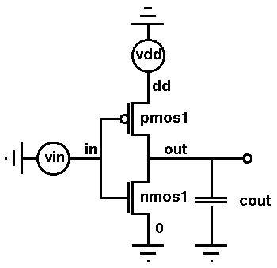
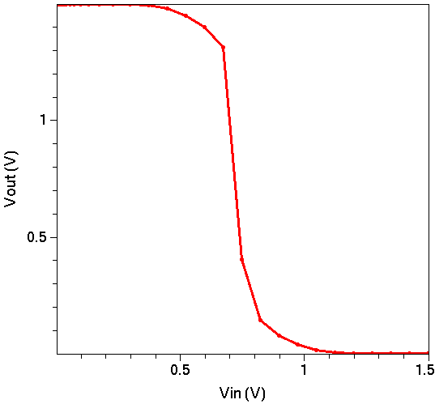
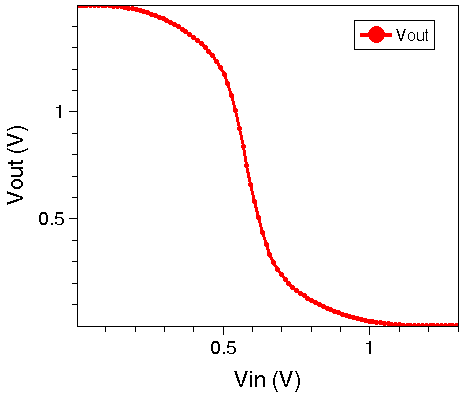
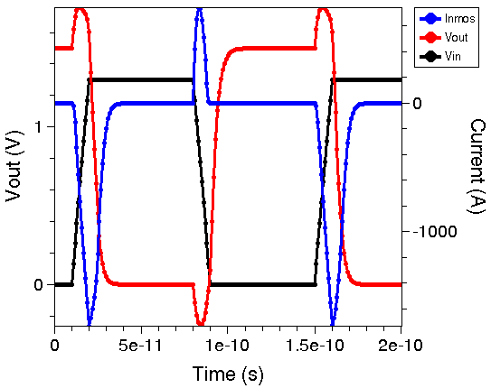
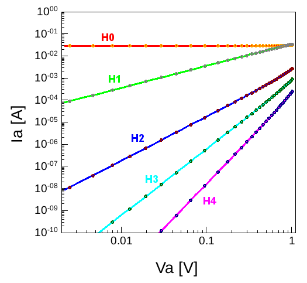
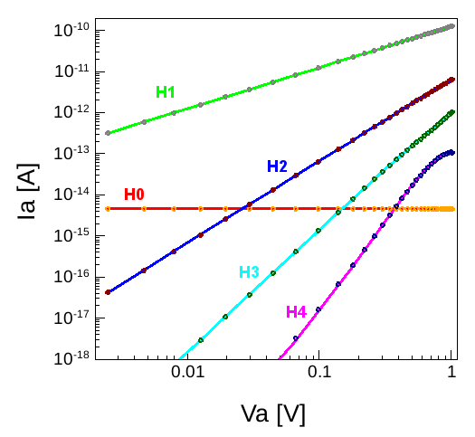

Sentaurus Device
3. Mixed Mode
3.1 Overview
3.2 Mixed-Mode Simulations
3.3 Transient Sweep
3.4 Small-Signal AC Analysis
3.5 Compact Models
3.6 PrimeSim HSPICE Netlists
3.7 Implicit Contact Resistance in Mixed Mode
3.8 Harmonic Balance Simulations
Objectives
- To demonstrate mixed-mode simulations in Sentaurus Device.
3.1 Overview
Section 2. Carrier Transport Models discusses the use of Sentaurus Device as a single-device simulator. Sentaurus Device also supports mixed-mode simulations on small circuits in which multiple circuit elements, including physical devices, compact model devices, and lumped elements, can exist.
For mixed-mode simulations, the command file of Sentaurus Device must include not only the definitions of each individual element in the circuit, but also a netlist showing the connectivity between the elements. As a result, additional sections, for example, the System section, are introduced in the command file. In a mixed-mode simulation, the Solve section also can be specified to solve either part of the system or the entire system.
Example applications include simulations of ring oscillators and single event upset of SRAM cells consisting of both compact model transistors and physical devices, and analyses of the performance of RF amplifiers with lumped elements and external parasitics.
The command files of Sentaurus Device featured in this section are contained in the Sentaurus Workbench project Applications_Library/GettingStarted/sdevice/CMOSInverter.
To work with the project, start Sentaurus Workbench and copy the CMOSInverter project to a local directory. The target directory must reside under the Sentaurus Workbench working directory to which the environment variable $STDB points. For details about this environment variable, see Section 1.2 Starting Sentaurus Workbench.
3.2 Mixed-Mode Simulations
The Sentaurus Device primary file sdevice_des.cmd within this project is used to simulate the voltage transfer characteristics (VTC) of a CMOS inverter consisting of both NMOS and PMOS devices. A second Sentaurus Device primary file sdevice1_des.cmd is used to simulate the inverter switching behavior.
Click to view the primary files vct_des.cmd and switching_des.cmd.
3.2.1 Device Section
This section defines a physical device that is later used to define a circuit element:
Device NMOS {
Electrode{
{ Name="source" Voltage=0.0 }
{ Name="drain" Voltage=0.0 }
{ Name="gate" Voltage=0.0 }
{ Name="substrate" Voltage=0.0 }
}
File{
Grid = "@tdr|nmos@"
Plot = "@tdrdat@"
Current = "@plot@"
Param = "@parameter@"
}
Physics{
AreaFactor=5
Mobility( DopingDep HighFieldSaturation Enormal )
EffectiveIntrinsicDensity( oldSlotboom )
}
}
Each Device section contains an Electrode, a File, and a Physics section. A unique identifier is required for each Device section, for example, NMOS and PMOS.
The AreaFactor keyword defines the width of the devices. By default in 2D simulations, Sentaurus Device assumes that the width of the simulated device is 1 μm such that the simulated current has the unit of A/μm.
In mixed mode, however, when currents from different devices interact, they must be scaled according to the actual device widths. In this example, the actual device width is set to 5 μm for the NMOS and 10 μm for the PMOS.
In the File section, the same root names for the output files, represented by the Sentaurus Workbench parameters @tdrdat@ and @plot@, are specified in both NMOS and PMOS device definitions. The conflict will be resolved when the instances of the devices are defined in the circuit. Sentaurus Device automatically adds the name of the instance in front of the given root name to make the saved file names unique.
3.2.2 Global Output File
File{
Output = "@log@"
}
In single-device simulations, the File section specifies the input and output files of the simulation (see Section 1.2.1 File Section).
In mixed-mode simulations with multiple devices, the File section can be placed either inside a Device definition (for example, the NMOS or PMOS definition) or outside of any Device definition. The (output) files specified in the global File section are used by all Device sections.
In this example, the Output file specified in the global File section, represented by the Sentaurus Workbench parameter @log@, is used by both the NMOS and PMOS definitions.
3.2.3 Global Plot Section
Plot{
eDensity hDensity
eCurrent hCurrent
ElectricField eEnormal hEnormal
eQuasiFermi hQuasiFermi
Potential Doping SpaceCharge
SRH Auger
ImpactIonization
eMobility hMobility
DonorConcentration AcceptorConcentration
Doping
eVelocity hVelocity
}
Like the global File section, the globally defined Plot section is used by all Device definitions. In this example, a single (global) Plot section is used for both the NMOS and PMOS definitions.
To define a Plot section that is valid only for a specific Device definition, place it inside the corresponding definition.
3.2.4 System Section
System{
Vsource_pset vdd (dd 0) { dc = 0.0 }
Vsource_pset vin (in 0) { dc = 0.0 }
NMOS nmos1 ( "source"=0 "drain"=out "gate"=in "substrate"=0 )
PMOS pmos1 ( "source"=dd "drain"=out "gate"=in "substrate"=dd )
Capacitor_pset cout ( out 0 ){ capacitance = 3e-14 }
Plot "n@node@_sys_des.plt" (time() v(in) v(out)
i(nmos1,out) i(pmos1,out) i(cout,out) )
}

Figure 1. Circuit diagram of CMOS inverter.
The System section is necessary only for mixed-mode simulations with multiple elements. Both the circuit elements and their mutual connections (or the netlist) are defined in the System section.
The keyword Vsource_pset represents a compact model voltage source (defined in the Sentaurus Device built-in models). The model is used here to define the two voltage sources in the circuit, that is, vdd and vin. Both voltage sources have two terminals. The vdd is connected to nodes dd and 0, which is the ground. The vin is connected to nodes in and 0.
The two physical device definitions, NMOS and PMOS, defined in the previous Device sections are used here to define the two circuit elements, nmos1 and pmos1, respectively. The same device definition can be repeated to define multiple circuit elements, all having identical physical properties but connected to different nodes of the circuit. For example, the NMOS definition can be used to define elements such as nmos1, nmos2, and nmos3.
The electrodes of the physical device defined in the Electrode section of the Device section are all connected to a node of the circuit, for example, "source"=0 "drain"=out.
The keyword Capacitor_pset represents a compact model capacitor, which is used in this example to define a lumped capacitor load, cout, in the circuit.
The Plot statement inside the System section allows voltages and currents at selected nodes of the circuit to be recorded. To record voltage, specify the node name. To record current, specify both the element and the node name through which the current flows.
3.2.5 Math Section
Math{
Extrapolate
RelErrControl
Digits=4
Notdamped=50
Iterations=12
Transient=BE
Method=Blocked
SubMethod=ParDiSo
}
In mixed-mode simulations, the Blocked linear solver is recommended to solve the circuit linear system equations. In contrast, to solve the large sparse linear equation system on a numerically simulated device level, the ParDiSo linear solver is used. For transient simulations, the backward Euler method is activated using Transient=BE.
3.2.6 Solve Section
Solve{
NewCurrentPrefix="init"
Coupled(Iterations=100){ Poisson }
Coupled{ Poisson Electron Hole Contact Circuit }
Quasistationary(
InitialStep=1e-3 Increment=1.35
MinStep=1e-5 MaxStep=0.05
Goal{ Parameter=vdd.dc Voltage= 1.5 }
){ Coupled{ nmos1.poisson nmos1.electron nmos1.hole nmos1.contact
pmos1.poisson pmos1.electron pmos1.hole pmos1.contact
circuit }
}
NewCurrentPrefix=""
Quasistationary(
InitialStep=1e-3 Increment=1.35
MinStep=1e-5 MaxStep=0.01
Goal{ Parameter=vin.dc Voltage= 1.5 }
){ Coupled{ nmos1.poisson nmos1.electron nmos1.hole nmos1.contact
pmos1.poisson pmos1.electron pmos1.hole pmos1.contact
circuit }
}
}
In mixed-mode simulations, other sets of equations must be solved in addition to the equations solved for single devices, for example, the Poisson equation and the carrier continuity equations. The pair of statements in the Coupled statement (Contact and Circuit) specifies explicitly the set of equations to be included in the solution.
In mixed-mode simulations, the inclusion is performed by default, unless the Poisson equation is the only equation to be solved.
In the Goal statement of the two Quasistationary commands, the ramping targets are vdd.dc and vin.dc, which are model parameters defining the voltages of the corresponding voltage sources. Since these two voltage sources are connected to nodes in the circuit, the equivalent of these statements ramps up the nodal voltages.
In the last two Coupled statements, the device names (nmos1 and pmos1) restrict the set of equations to be applied to a specific device in the simulation. In this example, the electron continuity equation is solved for the nmos1 device, and the hole continuity equation is solved only for the pmos1 device.
The two Quasistationary commands first switch on the power-supply voltage source vdd (from 0 V to 1.5 V) and then ramp up the input-signal voltage source vin, which also increases from 0 V to 1.5 V.

Figure 2. VTC curve for CMOS inverter.
3.3 Transient Sweep
In Sentaurus Device, transient simulations are performed using the Transient command in the Solve section. The command can be used in both single-device simulations and mixed-mode circuit-device simulations.
The command file to simulate the inverter transient switching behavior, featured in this section, is available within the same Sentaurus Workbench project Applications_Library/GettingStarted/sdevice/CMOSInverter. The transient simulation is performed by the second Sentaurus Device tool instance labeled sdevice1.
Most of the file for the transient simulation is discussed in Section 3.1 Overview and Section 3.2 Mixed-Mode Simulations, therefore, it is not repeated here. Only sections that differ from the VTC step are discussed here.
3.3.1 System Section
System{
Vsource_pset vdd (dd 0) { dc = 0.0 }
Vsource_pset vin (in 0) {
pulse = (0.0 # dc
1.5 # amplitude
10e-12 # td
10e-12 # tr
10e-12 # tf
60e-12 # ton
140e-12) # period
}
NMOS nmos1 ( "source"=0 "drain"=out "gate"=in "substrate"=0 )
PMOS pmos1 ( "source"=dd "drain"=out "gate"=in "substrate"=dd )
Capacitor_pset cout ( out 0 ){ capacitance = 3e-14 }
Plot "n@node@_sys_des.plt" (time() v(in) v(out)
i(nmos1,out) i(pmos1,out) i(cout,out) )
}
In the previous example (see Section 3.2 Mixed-Mode Simulations), the input signal vin was defined as a static voltage source in the System section (see Section 3.2.4 System Section) whose initial value was 0.0 V and that was then ramped up to 1.5 V using the Quasistationary command in the Solve section (see Section 3.2.6 Solve Section).
In this example, vin is defined as a time-dependent voltage source that generates a pulse train, as seen in Figure 3.
Other time-dependent signals, such as sinusoids, can be defined as well.
{kind=link}
Figure 3. Switching characteristics of CMOS inverter: input voltage (black), output voltage (red), and current flowing through NMOS transistor (blue). (Click image for full-size view.)
3.3.2 Solve Section
Solve{
NewCurrentPrefix="init_"
Coupled(Iterations=100){ Poisson }
Coupled{ Poisson Electron Hole Contact Circuit }
Quasistationary(
InitialStep=1e-3 Increment=1.35
MinStep=1e-5 MaxStep=0.05
Goal{ Parameter=vdd.dc Voltage= 1.5 }
){ Coupled{ nmos1.poisson nmos1.electron nmos1.hole nmos1.contact
pmos1.poisson pmos1.electron pmos1.hole pmos1.contact
circuit }
}
NewCurrentPrefix=""
Transient (
InitialTime=0 FinalTime=200e-12
InitialStep=1e-12 Increment=1.3
MaxStep=5e-12 MinStep=1e-15
TurningPoints (
( Condition ( Time ( 1e-11 ; 8e-11 ; 1.5e-10 ) ) Value= 3.0e-13 )
( Condition ( Time ( Range= ( 1e-11 2e-11 ) ; Range= ( 8e-11 9e-11 ) ;
Range= ( 1.5e-10 1.6e-10 ) ) ) Value= 1.0e-12 )
)
){ Coupled{ nmos1.poisson nmos1.electron nmos1.hole nmos1.contact
pmos1.poisson pmos1.electron pmos1.hole pmos1.contact
circuit }
}
}
The target of a transient sweep is FinalTime. Like the parameters specified in the Quasistationary command, parameters specified in the Transient command, for example, InitialTime and FinalTime, control the sweeping of the time and check the convergence of the solution. The default unit of these parameters is second.
Unlike the Quasistationary command, no Goal statement is necessary in a Transient sweep.
The TurningPoints statement is used to improve the solution accuracy when the input signal changes with a steep gradient. Here, the first condition initiates the computation of the transient for the time points where the rises and falls of the input signal start and limits the time step to the value given by Value. The second condition limits the advancing time step during the entire rise and fall ranges of the input signal. Here, Value indicates the maximum time step achievable within the specified interval.
3.4 Small-Signal AC Analysis
In a small-signal analysis simulation, Sentaurus Device computes the Y-matrix that describes how the currents in a circuit would react if the applied voltages at different contact nodes of the circuit receive a small perturbation \(δv\):
\[ δi = Y · δv = ( A + j · ω · C ) · δv \]
The Y-matrix measures the small current changes \(δi\), in response to a small voltage perturbation \(δv\).
The complex Y-matrix can be split into two parts. The real part \(A\) is the conductance matrix that measures the in-phase response of the current with the voltage. The imaginary part \(C\) is the capacitance matrix that measures the out-phase response. The symbol \(j\) denotes the imaginary unit and \(ω\) denotes the frequency of the small-signal change.
For a typical MOS device with four terminals, gate (g), drain (d), source (s), and body (b), the \(A\) and \(C\) matrices have the following elements:
\[ [\table i_g; i_d; i_s; i_b] = ( [\table a_g_g, a_g_d, a_g_s, a_g_b; a_d_g, a_d_d, a_d_s, a_d_b ; a_s_g, a_s_d, a_s_s, a_s_b; a_b_g, a_b_d, a_b_s, a_b_b ] + j · ω · [\table c_g_g, c_g_d, c_g_s, c_g_b; c_d_g, c_d_d, c_d_s, c_d_b ; c_s_g, c_s_d, c_s_s, c_s_b; c_b_g, c_b_d, c_b_s, c_b_b ]) · [\table v_g; v_d; v_s; v_b] \]
For example, the \(a_d_g\) element represents the in-phase drain-current response to a small gate-voltage change, which is by definition the transconductance of the MOS device. Similarly, \(c_b_g\) represents the out-phase body-current response to a small change in gate voltage. This quantity corresponds to the gate-to-body capacitance. In the .plt file, \(a_d_g\) corresponds to a(d,g).
Sentaurus Device performs small-signal analyses in the mixed-mode environment (see Section 3.2 Mixed-Mode Simulations), which makes it possible to include, for example, external parasitics or matching networks in the analyses.
The small-signal analysis command files of Sentaurus Device featured in this section are used in the Sentaurus Workbench project Applications_Library/GettingStarted/sdevice/AC.
To work with the project, start Sentaurus Workbench and copy the AC project to a local directory. The target directory must reside under the Sentaurus Workbench working directory to which the environment variable $STDB points. For details about this environment variable, see Section 1.2 Starting Sentaurus Workbench.
The Sentaurus Device primary file AC_des.cmd from this project includes commands to conduct a small-signal AC analysis on a MOSFET device.
Click to view the primary file AC_des.cmd.
3.4.1 Device Section
Device "MOS" {
...
}
Since small-signal analyses are performed in the mixed-mode environment, one or more Device sections are required to define the physical devices.
3.4.2 Global Output File Section
File {
Output = "@log@"
ACExtract = "@acplot@"
}
The file name for the AC analysis output is declared in the global File section. If specified by the special Sentaurus Workbench parameter @acplot@ as shown here, it will be expanded by the preprocessor to n2_ac_des.plt, where n2 is the actual Sentaurus Workbench node number.
3.4.3 System Section
System {
*-Physical devices:
MOS nmos1 ( "source"=s "drain"=d "gate"=g "substrate"=b )
*-Lumped elements:
Vsource_pset vs (s 0) { dc = 0.0 }
Vsource_pset vg (g 0) { dc = 0.0 }
Vsource_pset vb (b 0) { dc = 0.0 }
Vsource_pset vd (d 0) { dc = 0.0 }
}
For small-signal analysis simulations, an attached voltage source is required for each terminal if the terminal is to be included in the AC analysis.
3.4.4 Solve Section
Solve {
NewCurrentPrefix="init_"
Coupled(Iterations=100){ Poisson }
Coupled{ Poisson Electron Hole }
Quasistationary (
InitialStep=0.1 Increment=1.3
MaxStep=0.5 Minstep=1.e-5
Goal { Parameter=vg.dc Voltage=-3.0 }
){ Coupled { Poisson Electron Hole } }
NewCurrentPrefix=""
Quasistationary (
InitialStep=0.01 Increment=1.3
MaxStep=0.05 Minstep=1.e-5
Goal { Parameter=vg.dc Voltage=3.0 }
){ ACCoupled (
StartFrequency=1e6 EndFrequency=1e6 NumberOfPoints=1 Decade
Node(s d g b) Exclude(vs vd vg vb)
ACCompute (Time = (Range = (0 1) Intervals = 40))
){ Poisson Electron Hole }
}
}
The initial Quasistationary command biases the device to the starting gate voltage for the C–V sweep.
The ACCoupled statement activates the small-signal analysis during the next Quasistationary sweep.
In this example, the AC analysis is performed at a single frequency (1 MHz) only. For a frequency sweep, the start and end frequencies as well as the steps of frequencies must be defined. The keyword Decade or Linear determines whether the frequency points are distributed equidistantly on a logarithmic or linear scale, respectively.
The node list in the Node statement declares which nodes must be included in the Y-matrix calculation.
All voltage sources attached to nodes mentioned in the Node list must be excluded from the AC analysis, since a voltage source represents a short circuit for an AC signal. To exclude a given voltage source, include it in the Exclude statement.
The (optional) ACCompute statement enforces that the AC analysis is performed on a set of predefined bias points. However, Sentaurus Device can compute intermediate steps to ensure convergence. For large structures and simulations with slow convergence, ACCompute can help to speed up the simulation considerably by suppressing the AC analysis at intermediate points.
{kind=link}
Figure 4. Total-gate (red), gate-to-contact (blue), and gate-to-body (green) capacitance as a function of gate voltage. (Click image for full-size view.)
3.4.5 AC Analysis With Implicitly Defined Circuit
You can set up a small-signal AC analysis in a simplified way without specifying a circuit explicitly. The keyword ImplicitACSystem in the Math section defines the circuit implicitly and lets you perform a small-signal analysis without the Device and System sections. The ACCoupled statement must be defined as in Section 3.4.4 Solve Section. The simulation is performed such that all voltage sources are excluded from the AC analysis.
The implicitly used circuit nodes are named automatically and are used to address the output data. The total gate capacitance in the .plt file is named, for example, c(N_gate, N_gate).
The second Sentaurus Device tool instance in the project Applications_Library/GettingStarted/sdevice/AC uses ImplicitACSystem. The second Sentaurus Visual tool instance uses the automatically named output quantities to plot a C–V curve.
3.5 Compact Models
In Sentaurus Device mixed-mode simulations, several compact models, typically used in circuit simulations, are available. Such models range from basic elements such as voltage and current sources to sophisticated compact models for power and submicron device simulation. This section demonstrates the use of such models.
A project similar to the inverter example in Section 3.3 Transient Sweep is given in the directory Applications_Library/GettingStarted/sdevice/inverter_compact_model. Therein, the NMOS and PMOS devices of the inverter are simulated using the BSIM3 model.
3.5.1 Sentaurus spice2sdevice Utility
Model cards contain parameter sets, mostly in SPICE format, for specific devices such as NMOS and PMOS. The spice2sdevice utility can convert simple model cards, as well as subcircuit and SPICE circuit files, into files compatible with Sentaurus Device.
In this example, the translation is accomplished within Sentaurus Workbench using a shell tool instance labeled SPtoSD.
Click to view the command file SPtoSD_csh.cmd.
The command:
spice2sdevice -m -o @pwd@/models/models.scf @pwd@/MODELS.cir
translates the BSIM3 parameter sets of the Synopsys PrimeSim™ HSPICE® model cards contained in the file MODELS.cir in the project directory into Sentaurus Device parameter sets, and writes the result into the file models.scf in the directory models.
Click to view the command file MODELS.cir and the file models.scf.
The option -m indicates that only model cards are contained in the file to be translated. The resulting Sentaurus Device parameter sets can be inspected in models.scf. The command-line options for spice2sdevice are:
-b Use Berkeley SPICE models instead of PrimeSim HSPICE.
(applies only to MOSFETs level 1, 2, and 3).
-c Translate a SPICE circuit file.
-m Translate a SPICE model file.
-o <filename> Store the Sentaurus Device circuit file in <filename>.
-d Print additional debug information.
-v Show version information.
-h Show this help message.
3.5.2 Path to Model and Circuit Information: SpicePath
In the global File section of the Sentaurus Device command file, a directory can be specified as SpicePath. This directory is scanned by Sentaurus Device for files with the extension .scf. Such files can contain circuit parts to be used in the System section of the command file or user-defined compact model parameter sets from model cards:
File{
Output = "@log@"
SpicePath= "@pwd@/models"
}
The project directory, represented by the Sentaurus Workbench variable @pwd@, contains a subdirectory models with the parameter file models.scf. As previously discussed, this file is generated with the spice2sdevice utility from the PrimeSim HSPICE model card MODELS.cir. Alternatively, a model parameter set can be provided manually, for example:
PSET nmos_bsim3
DEVICE BSIM3
PARAMETERS
a0 = 0.3496967
a1 = 0.02778747
a2 = 0.9
ags = 0.1
at = 22400
b0 = 0.546
...}
In the first line, you define a name for the model (here, nmos_bsim3). The second line states that the model is based on the BSIM3 model. Next is a list of the model parameters with relative values. The number of parameters can be several hundreds for a complete model.
3.5.3 Instances of Compact Models: Instance Parameters
The System section of the Sentaurus Device command file is:
System{
Vsource_pset vdd (dd 0) { dc = 0.0 }
Vsource_pset vin (in 0) { dc = 0.0 }
Vsource_pset vss (ss 0) { dc = 0.0 }
nmos_bsim3 mosn1 ( out in ss ss ) { l=0.30u w=@wnmos@ }
pmos_bsim3 mosp1 ( out in dd dd ) { l=0.25u w=@wpmos@ }
Capacitor_pset cout ( out 0 ) { capacitance = 20e-15 }
Plot "n@node@_sys_des.plt" (time() v(dd) v(in) v(out)
i(mosn1,out) i(mosp1,out) i(cout,out) )
}
It is similar to that in Section 3.2.4 System Section. The only difference here is that instances of the compact models defined in the file model.scf replace the corresponding TCAD device instances. For the NMOS device, the instance mosn1 of an nmos_bsim3 model is specified and connected to appropriate contact nodes. The ordering of the contacts corresponds to (drain gate source sub) in the BSIM3 model. Similarly, the PMOS device of the inverter is given by the instance mosp1 of a pmos_bsim3 model.
The compact model parameters specified in the file model.scf are valid for all instances of that model. Parameters specific to an individual instance of the model can be defined in braces – {} – directly in the System section of the command file.
In this example, the gate length l and the device width w are specified for both the NMOS mosn1 and the PMOS mosp1.
For a complete list of available models and their instance parameters, refer to the Compact Models User Guide. Further model-specific information can be found in the PrimeSim HSPICE documentation.
The results for the VTC as well as the switching behavior of the MOS inverter are shown in Figure 5 and Figure 6, respectively.

Figure 5. VTC for CMOS inverter using MOS compact models.

Figure 6. Switching characteristics of CMOS inverter using MOS compact models: input voltage (black), output voltage (red), and current flowing through NMOS transistor (blue).
The model parameters used are for demonstration purposes only.
3.6 PrimeSim HSPICE Netlists
In Sentaurus Device mixed-mode simulations, PrimeSim HSPICE netlists are accepted for a subset of the PrimeSim HSPICE language. Such netlists must be provided in a separate file and are referenced in the System section of a mixed-mode simulation.
A corresponding demonstration example of a ring oscillator is available in the Applications_Library/GettingStarted/sdevice/ring_oscillator directory.
{kind=link}
Figure 7. Schematics of a five-stage ring oscillator with delay capacitances. (Click image for full-size view.)
The System section of the Sentaurus Device command file osci_des.cmd for this ring oscillator reads:
System{
Netlist = "@pwd@/stages.cir"
nmos "x1.m1" ( "source"=gnd "drain"=2 "gate"=1 "substrate"=gnd )
{ Physics {AreaFactor= 0.2} }
pmos "x1.m2" ( "source"=nvd "drain"=2 "gate"=1 "substrate"=nvd )
{ Physics {AreaFactor= 0.3} }
Capacitor_pset C1 ( 2 gnd ){ capacitance = 1e-15 }
Vsource_pset vdd (nvd gnd) { dc =0 }
initialize ( 1=@<vdd/2>@ 2=@<vdd/2>@ 3=@<vdd/2>@ 4=@<vdd/2>@ 5=@<vdd/2>@ )
Plot "n@node@_sys_des.plt" (time() v(nvd) v(1) v(2) v(3) v(4) v(5)
i(vdd,nvd)
i("x1.m1",2) i("x1.m2",2)
i("x2.m1",3) i("x2.m2",3)
i("x3.m1",4) i("x3.m2",4)
i("x4.m1",5) i("x4.m2",5)
i("x5.m1",1) i("x5.m2",1)
)
set(gnd=0)
}
The corresponding PrimeSim HSPICE netlist stages.cir, referenced in the System section by:
System{
Netlist = "@pwd@/stages.cir"
... }
describes the last four stages of the ring oscillator. The NMOS and PMOS of the first stage are simulated by the drift-diffusion model for the physical devices x1.m1 and x1.m2. They are defined in the corresponding Device sections of the command file as usual. The netlist stages.cir contains the following elements:
.TITLE 'Five Stage Ring Oscillator' .MODEL nMOS_L54 NMOS Level=54 + version = 4.6 + vth0=0.22 .MODEL pMOS_L54 PMOS Level=54 + version = 4.5 + vth0=-0.22 .GLOBAL gnd .PARAM L=130n WP=150n WN=100n .SUBCKT INVERTER IN OUT DD SS * Drain Gate Source SubStrate Model L W M1 OUT IN DD DD pMOS_L54 L=L W='2*WP' M2 OUT IN SS SS nMOS_L54 L=L W='2*WN' C1 OUT gnd 1f .ENDS INVERTER *X1 defined with physical devices in System section X2 2 3 nvd gnd INVERTER X3 3 4 nvd gnd INVERTER X4 4 5 nvd gnd INVERTER X5 5 1 nvd gnd INVERTER .END
The netlist starts with a title line and ends with the .END statement. Everything following .END is ignored.
The .GLOBAL statement specifies the node names (here, gnd) globally available across all subcircuits.
The .MODEL statements define the SPICE model specifications for the devices nMOS_L54 and pMOS_L54, which are defined to be the PrimeSim HSPICE Level 54 model along with some explicitly set model parameters. The corresponding settings for NMOS and PMOS are shown here (the plus sign is the line continuation character).
PrimeSim HSPICE parameters are names associated with a value. They are specified using the .PARAM statement. Numeric and string parameters are supported.
The following statement specifies values for L, WP, and WN:
.PARAM L=130n WP=150n WN=100n
The values can be specified in decimal form or together with scale factors such as n for 10–9 (nano). For a list of scale factors, refer to the Sentaurus™ Device User Guide.
Subcircuits are typically used for reusable cells. Their general syntax is:
.SUBCKT name n1 n2 ... [param1= ...] {param2= ...] ...
.ENDS
Here, a stage of the ring oscillator containing an inverter and a delay capacitance is defined as subcircuit INVERTER:
.SUBCKT INVERTER IN OUT DD SS * Drain Gate Source SubStrate Model L W M1 OUT IN DD DD pMOS_L54 L=L W='2*WP' M2 OUT IN SS SS nMOS_L54 L=L W='2*WN' C1 OUT gnd 1f .ENDS INVERTER
As exemplified for the width W of the MOS devices by '2*WP' and '2*WN', simple arithmetic operations can be performed in the PrimeSim HSPICE netlist. For a complete set of available arithmetic expressions and functions, refer to the Sentaurus™ Device User Guide.
The remaining elements in the System section of the MixedMode command file are a standard voltage source vdd together with various node initialization voltages and a Plot statement. Therein, element names contained in a subcircuit such as "x3.m1" are referenced by combining the subcircuit name (x3) and the device name (m1). The combined name must be used within double quotation marks.
For the Sentaurus Device simulation, the PrimeSim HSPICE netlist of the System section is translated internally by the spice2sdevice utility, and the resulting elements in Sentaurus Device syntax are substituted for the PrimeSim HSPICE netlist. These elements can be checked in the log file of the Sentaurus Device simulation.
Finally, in the Solve section, the DC supply voltage is ramped to 2 V (represented by the Sentaurus Workbench parameter @vdd@), followed by a transient to establish oscillations:
Solve{
NewCurrentPrefix="init_"
Coupled { Poisson circuit }
Quasistationary (
InitialStep= 1e-2 Increment= 1.41
MinStep= 1e-7 MaxStep= 0.2
Goal { parameter= vdd.dc Voltage= @vdd@ }
){ Coupled { Poisson Electron Hole circuit}
}
NewCurrentPrefix=""
Transient(
InitialTime=0.0 FinalTime= 1e-9
InitialStep=5e-13 Increment=1.35
MinStep=1e-13 MaxStep=2e-12
){ Coupled{ poisson electron hole circuit }
}
System("rm init_*.plt")
}
Starting with the transient simulation, the limitations for the initialized node voltages are removed, and the system can evolve freely. Figure 8 shows the resulting waveforms.
{kind=link}
Figure 8. Voltage and current transients of the first inverter stage: input voltage (solid red), output voltage (solid green), and current flowing through NMOS transistor (dashed light-blue) and PMOS (dashed blue) transistor. (Click image for full-size view.)
You can see that, after a short transient, the feedback loop starts to stabilize and the system begins to oscillate periodically.
As an alternative to the specification in the System section, you can declare physical devices in the PrimeSim HSPICE netlist using the statement .SDEVICE device_name drain gate source bulk, and use instances of it with subcircuit commands such as x1 d g s b device_name.
However, in contrast to the standard specification of physical devices in the System section shown here, you cannot use instance-specific Physics settings, such as Areafactor, for the NMOS x1.m1 for physical devices instanced in the PrimeSim HSPICE netlist.
System{
Netlist = "@pwd@/stages.cir"
nmos "x1.m1" ( "source"=gnd "drain"=2 "gate"=1 "substrate"=gnd )
{ Physics {AreaFactor= 0.2} }
... }
For a description of the supported subsets of PrimeSim HSPICE specifications and models, refer to the Sentaurus™ Device User Guide.
3.7 Implicit Contact Resistance in Mixed Mode
To create a small voltage differential between the TCAD device contact and the circuit node to which it is connected, Sentaurus Device adds a very small resistor between the contact and the node. By default, the value of this resistor is 1 mΩ, but it can be adjusted by using:
Math {
MixedModeContactResistance=<float>
}
The value can be any positive number. If the value is set to zero (default), then the internal 1 mΩ resistor is used.
In the example located in the directory Applications_Library/GettingStarted/sdevice/MixedModeContactResistance, a silicon resistor with an internal resistance of 10 Ωμm2 is defined. In experiment 1 of the project, that is, for a device with a 1 μm2 area, the effective resistance computed from I–V curves in single device mode is 10 Ω (Rsil), as expected. In mixed mode, it can be observed that there are two 1 mΩ additional resistors at two contacts (Rext).
Having this resistor gives better convergence of device simulations, as there is some voltage difference between the TCAD device contacts and the connected node. Therefore, it is good to have such a small resistor. However, when an areafactor is used, the resistor value might become too small. You can observe that in experiment 3 of the project, where areafactor=1e4 is used, the added contact resistance is only 1e-7 Ω, which might lead to convergence issues. This issue would not occur if the actual device area was set to 1e4, instead of using areafactor. You can observe that the extra resistor is still 1 mΩ in experiment 5.
The way to correct that is to use MixedModeContactResistance=1e-3. You can observe that for both experiments 4 and 6, the extra resistor is 1 mΩ, giving consistent results whether areafactor is used or the actual device area is increased.
Any resistor value defined in the Electrode section overrides the value specifed by MixedModeContactResistance.
3.8 Harmonic Balance Simulations
Sentaurus Device supports harmonic balance (HB) analysis for mixed-mode simulations. HB analysis is a frequency-domain method that solves periodic time-dependent problems. As such, it is computationally more efficient for problems with time constants that differ by orders of magnitude. Moreover, the periodic excitation is not restricted to infinitesimally small amplitudes as assumed for small-signal AC analysis (see Section 3.4 Small-Signal AC Analysis).
Different modes of HB analysis are available:
- The multidimensional Fourier transformation (MDFT) mode is suitable for multitone analysis and one-tone analysis.
- The standard discrete Fourier transformation (SDFT) mode supports only one-tone analysis.
The corresponding demonstration examples for these modes are available in the Applications_Library/GettingStarted/sdevice/HarmonicBalance_pn project directory.
Click to view the command files for the SDFT, MDFT one-tone, and MDFT two-tone simulations.
Harmonic balance is not supported for traps or ferroelectrics.
3.8.1 Selecting the SDFT Mode or MDFT Mode
The SDFT mode is the default mode. Using this mode, the mixed-mode circuit can contain the standard SPICE and compact model interface (CMI) models. No special Math settings are required for this mode.
As an option, the logarithm of the carrier density can be used as a solution variable. This is beneficial for convergence in some HB simulations in the SDFT mode and MDFT mode.
The HBPlotFilePerNewton option requests to save HB .plt files for each converged nonlinear solve. This is needed to avoid issues with the subsequent Sentaurus Visual scripts.
The -NewHBFileNames option protects from saving HB results in the new unified format.
Math {
HBPlotFilePerNewton
HB {
LogDensity
... }
The MDFT mode is activated by the MDFT option in the HB section of the global Math section. This mode requires compact models defined by the CMI, which support assembly routines in the frequency domain. Some built-in models are available. For details, see the "CMI Models With Frequency-Domain Assembly" section of the Compact Models User Guide.
Math {
HBPlotFilePerNewton
HB {
MDFT
... } }
3.8.2 SDFT Simulations
Click to view primary file SDFT_des.cmd.
3.8.2.1 System Section
For SDFT simulations, the System section contains standard specifications for a time periodic transient simulation. In this example, this is a sinusoidal voltage source with frequency of @f1@ applied across a simple p-n diode. The System section reads as follows:
System {
PN pn (cathode=c anode=a)
Vsource_pset "va" (a c) { sine = (0.0 0.0 @f1@ 0 0) }
set(c=0)
HBPlot "n@node@_hbplot" ( v(a) i(pn a))
}
The HBPlot ... command specifies the file prefix for the HB circuit output of the simulation and the quantities to be saved. The syntax is the same as for the corresponding Plot statement in standard mixed-mode simulations.
3.8.2.2 Solve Section
In the Solve{...} section of the example, the diode is biased to the DC operation point by standard Coupled solutions first. The resulting DC solution is used to initialize the subsequent HB simulation, where the AC signal amplitude is ramped by a Quasistationary statement. The self-consistent solution of a given set of equations by the HB simulation is triggered by the HBCoupled(...){set of equations} statement:
Quasistationary (
InitialStep=1e-3 Increment=1.5
MaxStep=@<1.0/25>@ Minstep=1.e-8
Goal {Parameter="va"."sine[1]" Value=@mag@}
)
{ HBCoupled (
Tone ( Frequency = "va"."sine[2]" NumberOfHarmonics = @NumHarm@ )
Initialize = DCMode
Method = ILS
GMRES ( Tolerance = 1e-5 MaxIterations = 80 Restart = 20 )
RhsMin= 5e-3
) { Poisson Electron Hole }
In the HBCoupled statement, the specification of Tone is mandatory. The Tone is defined by the frequency parameter of the AC signal (given by the third parameter of the sine(...) statement of the voltage source va in the System section) and the number of harmonics (NumberOfHarmonics) to be used in the HB simulation:
Tone ( Frequency = "va"."sine[2]" NumberOfHarmonics = @NumHarm@ )
Typically, nonlinear convergence improves with an increasing number of harmonics for one-tone HB simulations. However, only a moderate increase might be advantageous in terms of convergence and simulation time.
Then, the HB simulation is initialized for that Tone from a previous solution. If that solution resulted from a standard Coupled DC solution, the HB simulation is initialized from DCMode, specified by the HBCoupled option:
Initialize = DCMode
Provided an HB solution is already available, a subsequent HB simulation would be initialized from HBMode, that is, by:
Initialize = HBMode
The remaining options used in the HBCoupled statement are solver-specific settings. The use of the iterative linear solver GMRES (preconditioned restarted generalized minimum residual method) is recommended for most applications as the memory requirements for storing the HB Jacobian matrix typically become very large. If GMRES is used, ILS must be selected as Method:
Method = ILS
GMRES ( Tolerance = 1e-5 MaxIterations = 80 Restart = 20 )
Alternatively, for a very small number of harmonics and a moderately sized simulation grid, a direct linear solver can be used. The direct solver PARDISO is best suited for such small-sized problems.
3.8.2.3 Outputs: Device Instance Currents, Voltages, Temperatures, and Heat Components
The results of each converged HBCoupled statement (contact currents and voltages, temperatures, and heat components) are saved in separate .plt files for time domain and frequency domain data. The names of the files for the time domain contain a substring Tdom, and those for the frequency domain contain a substring Hdom. A four-digit plot index is used to label the files consecutively, for example:
... pn_n9_0009_Hdom_des.plt pn_n9_0009_Tdom_des.plt ...
Amplitudes for the harmonics can be extracted from these files and are plotted in Figure 9 for the anode current of the diode versus AC-signal amplitude. To reproduce the figures in the project, select the corresponding Sentaurus Visual node and then click the Run Selected Visualizer Nodes Together toolbar button of Sentaurus Workbench.
Click to view the corresponding Sentaurus Visual script.

Figure 9. Harmonics of the anode current for increasing sinusoidal amplitude of the anode voltage. The DC anode voltage is Vac = 2 V. Solid lines are calculated by the SDFT mode, and symbols refer to MDFT simulations.
Amplitudes for the harmonics taken from these files can be used to reconstruct the time-dependent current for the given time period. This is performed by Sentaurus Visual in the timedomain tool instance. Figure 10 shows the plot of the resulting anode current with the applied voltage versus time under forward bias. For that bias condition, the anode current of the diode is almost in phase with the applied bias.
Click to view the corresponding Sentaurus Visual script.
{kind=link}
Figure 10. Anode current and anode voltage versus time under forward bias conditions. Time dependency is calculated from the Fourier series obtained from the harmonic coefficients calculated by the SDFT mode. (Click image for full-size view.)
3.8.2.4 Output: Circuit Currents and Voltages
The keyword HBPlot in the System section allows you to plot circuit quantities in the same way as the keyword Plot in standard mixed-mode simulations. In the SDFT mode, Sentaurus Device writes the following four files:
- A file with the name component Fdomain containing Fourier coefficients
- A file with the name component Tdomain containing time domain data
- A file with the name component Hmag containing harmonic magnitudes
- A file with the name component Hphase containing harmonic phases
Next to the plot index used to number the device .plt files, the files for circuit quantities are labeled additionally with an integer index that is increased by one for each Coupled statement or HBCoupled Solve statement. An example set of file names is:
n9_hbplot_Coupled_3_0009_Fdomain_des.plt n9_hbplot_Coupled_3_0009_Fmag_des.plt n9_hbplot_Coupled_3_0009_Fphase_des.plt n9_hbplot_Coupled_3_0009_Tdomain_des.plt
3.8.2.5 Output: Solution Variables
Plotting solution variables is supported only for one-tone HB simulations. This is implicitly performed if the HB section in the Math section is present. Sentaurus Device will plot the coefficients of the one-sided Fourier series representation up to the first h=3 harmonics as real-valued vector components with names composed of a prefix HB, a suffix _C<i>, and the names of the solution variables.
Odd values <i>=2h-1 correspond to the cos terms, and even values <i>=2h correspond to the sin terms. The zero component describes the DC value. In addition, the magnitude and phase are plotted, with the prefixes Mag and Phase to the variable names and suffixes _C<h>. Figure 11 shows an example of the second harmonic magnitude of the electrostatic potential.
{kind=link}
Figure 11. Magnitude of the electrostatic potential in the second harmonic obtained by SDFT calculation. (Click image for full-size view.)
3.8.3 MDFT One-Tone Simulations
Click to view the primary file MDFT_des.cmd.
3.8.3.1 System Section
The MDFT mode requires compact models that support assembly routines in the frequency domain, that is, the CMI-HB-MDFT function set as described in the "Sentaurus Device Analysis Methods" section of the Compact Models User Guide. Only such models are allowed in the System section of MDFT HB simulations. Sentaurus Device provides a basic set of compact models that support this functional behavior.
For the p-n diode simulation demonstrated for the SDFT mode, the System section for one-tone HB simulations in MDFT mode is given by:
System {
PN pn (cathode=c anode=a)
sd_hb_vsource_pset "va" (a c) { dc= 0.0
freq= @f1@ mag= 0.0 phase= -90.
}
set(c=0)
Here, the compact model sd_hb_vsource represents a harmonic voltage source that supports assembly routines in the frequency domain. The parameters used are the DC voltage, the frequency freq of the AC voltage, and its magnitude (mag) and phase. Next to these specialized compact models, the System section is the same as for standard mixed-mode simulations.
3.8.3.2 Math Section
For MDFT simulations, scaling factors are available for the residuum and the update error. In the Math section, the factors RhsScale and UpdateScale can be used to scale the residuum and the update error of individual equations, which are used as Newton convergence criteria. This is often necessary for the electron and hole continuity equations, and values differ for different applications and devices. Examples of such settings are used in this project as shown here:
Math {
HBPlotFilePerNewton
HB {
MDFT
LogDensity
UpdateScale(Electron) = 1.e-0
UpdateScale(Hole) = 1.e-2
UpdateScale(Poisson) = 1.e-0
UpdateScale(Contact) = 1.e-0
UpdateScale(Circuit) = 1.e-0
RhsScale(Electron) = 1.e-6
RhsScale(Hole) = 1.e-6
RhsScale(Poisson) = 1.e-1
RhsScale(Circuit) = 1.e-6
RhsScale(Contact) = 1.e-8
}
... }
For a complete list with defaults, you can examine the log file of an MDFT simulation without explicit specifications in the Math section.
3.8.3.3 Solve Section
In the Solve{...} section of the one-tone MDFT simulation, first the project is cleaned up to remove some node files that might exist from a previous run. Then, the diode is biased to the DC operation point by standard Coupled solutions:
Solve {
System("rm *n@node@_*_Hdom_des.plt *n@node@_*_Tdom_des.plt")
Coupled { Poisson }
Coupled { Poisson Electron Hole }
Quasistationary (
InitialStep=1e-3 Increment=1.5
MaxStep=@<1.0/20>@ Minstep=1.e-8
Goal { Parameter="va"."dc" Voltage=@Vdc@}
)
{Coupled { Poisson Electron Hole } }
The resulting DC solution is used to initialize the subsequent HB simulation. Then, the AC-signal amplitude for the MDFT HB analysis is ramped by a Quasistationary statement, whereby the MDFT HB simulation is performed at each bias step by the HBCoupled(...){set of equations} statement:
Quasistationary (
InitialStep=1e-3 Increment=1.5
MaxStep=@<1.0/25>@ Minstep=1.e-8
Goal { Parameter="va"."mag" Value= @mag@ }
)
{HBCoupled (
Tone ( Frequency = "va"."freq" NumberOfHarmonics = @NumHarm@ )
Initialize = DCMode
Method = ILS
GMRES ( Tolerance = 1e-5 MaxIterations = 80 Restart = 20 )
) { Poisson Electron Hole }
Like SDFT simulations, the Tone specification in the HBCoupled statement is mandatory. Here, it specifies the frequency parameter of the AC signal of the HB voltage source va in the System section and the number of harmonics (NumberOfHarmonics) to be used in the HB simulation:
Tone ( Frequency = "va"."freq" NumberOfHarmonics = @NumHarm@ )
The remaining HBCoupled specifications are solver specifics with the same meaning as discussed for SDFT simulations.
3.8.3.4 Outputs: Device Instance Currents, Voltages, Temperatures, and Heat Components
The results of each converged HBCoupled (contact currents and voltages, temperatures, and heat components if solved for) are saved in separate .plt files for time domain and frequency domain data. The names of the files for the time domain contain a substring Tdom, and those for the frequency domain contain a substring Hdom. A four-digit plot index is used to label the files consecutively, for example:
... pn_n12_0009_Hdom_des.plt pn_n12_0009_Tdom_des.plt ...
Amplitudes for the harmonics can be extracted from these files and are plotted in Figure 12 for the anode current of the diode versus the AC-signal amplitude.
Click to view the corresponding Sentaurus Visual script.

Figure 12. Harmonics of the anode current for increasing sinusoidal amplitude of the anode voltage. The DC anode voltage is Vac = –2 V. Solid lines are calculated by the SDFT mode and symbols refer to MDFT simulations.
Amplitudes for the harmonics taken from these files can be used to reconstruct the time-dependent current for the given time period. This is performed by Sentaurus Visual in the timedomain tool instance. Figure 13 shows the plot of the resulting anode current with the applied voltage versus time under reverse bias. For that bias condition, the anode current of the diode is almost 90° out of phase with the applied bias according to the capacitive charging and decharging of the diode.
Click to view the corresponding Sentaurus Visual script.
{kind=link}
Figure 13. Anode current and anode voltage versus time under reverse bias conditions. Time dependency is calculated from the Fourier series obtained from the harmonic coefficients calculated by the MDFT mode. (Click image for full-size view.)
3.8.3.5 Outputs: Circuit Currents and Voltages
In MDFT simulations, the keyword HBPlot in the System section allows you to plot HB circuit quantities. It triggers Hdom and Tdom files to be written for the circuit.
Next to the plot index used to number the circuit .plt files, the circuit files are labeled additionally with an integer index that is increased by one for each Coupled statement or HBCoupled Solve statement. An example set of file names is:
n12_hbplot_Coupled_3_0015_Hdom_des.plt n12_hbplot_Coupled_3_0015_Tdom_des.plt
3.8.4 MDFT Two-Tone Simulations
Harmonic balance is computationally more efficient for problems with time constants that differ by many orders of magnitude. As an example, two high-frequency AC signals that are close to each other in frequency are applied to the p-n diode used so far. This results in a high-frequency component that would have to be resolved in the time domain, while the simulation requires simultaneously much longer times corresponding to the beating frequency. Figure 14 shows the voltage waveform resulting from two such AC voltages for a half period.
{kind=link}
Figure 14. Applied anode voltage versus time under reverse bias conditions. (Click image for full-size view.)
3.8.4.1 System Section: Two-Tone Simulation
The voltage signal in Figure 14 can be simulated by a two-tone HB calculation in MDFT mode. The MDFT mode is activated again in the Math section by the keyword MDFT. The System section contains the device sd_hb_vsource2, which represents a multitone voltage source with two tones. It allows the specification of two independent tones of oscillation with a DC component:
System {
PN pn (cathode=c anode=a)
sd_hb_sRL_pset "rp" (a c) { R=5meg }
sd_hb_vsource2_pset "va" (a c) { dc= 0.0
freq= @f1@ mag= 0.0 phase= -90.
freq2= @f2@ mag2= 0.0 phase2= -90.
}
The frequencies freq and freq2 of the two tones are taken to be f1 = 100 kHz and f2 = 101 kHz for this project. In addition to the HB voltage source, a resistor of type sd_hb_sRL_pset is defined in parallel to the diode as another example for a compact model that supports assembly routines in the frequency domain, as required by the MDFT mode.
The two base frequencies and their harmonics must not coincide with each other in MDFT simulations.
Click to view the primary file MDFT_2Tone_des.cmd.
3.8.4.2 Solve Section
In the Solve{...} section of this two-tone MDFT simulation, before solving for any equation, the project is cleaned up to remove some node files that might exist from a previous run. Then, the diode is biased to the DC operation point of ±2 V by standard Coupled solutions:
Solve {
System("rm *n@node@_*_Hdom_des.plt *n@node@_*_Tdom_des.plt")
Coupled { Poisson }
Coupled { Poisson Electron Hole }
Quasistationary (
InitialStep=1e-3 Increment=1.5
MaxStep=@<1.0/20>@ Minstep=1.e-8
Goal { Parameter="va"."dc" Voltage=@Vdc@}
)
{Coupled { Poisson Electron Hole } }
The resulting DC solution is used to initialize the subsequent HB simulation. Then, the AC-signal amplitudes for the two tones of the MDFT HB analysis are ramped by a Quasistationary statement to mag1 = mag2 = 0.5 V for each tone:
Quasistationary (
InitialStep=1e-3 Increment=1.5
MaxStep=@<1.0/25>@ Minstep=1.e-8
Goal { Parameter="va"."mag" Value= @mag1@ }
Goal { Parameter="va"."mag2" Value= @mag2@ }
)
{HBCoupled (
Tone ( Frequency = "va"."freq" NumberOfHarmonics = @NumHarm@ )
Tone ( Frequency = "va"."freq2" NumberOfHarmonics = @NumHarm@ )
Initialize = DCMode
Method = ILS
GMRES ( Tolerance = 1e-5 MaxIterations = 80 Restart = 20 )
) { Poisson Electron Hole }
The Tone keyword in the HBCoupled statement is mandatory for both tones. Each tone is identified by the HB voltage source name, here va, and the frequency parameter name freq or freq2. The number of harmonics (NumberOfHarmonics) to be used in the HB simulation is specified for each tone individually:
Tone ( Frequency = "va"."freq" NumberOfHarmonics = @NumHarm@ )
Tone ( Frequency = "va"."freq2" NumberOfHarmonics = @NumHarm@ )
The remaining HBCoupled specifications used in this two-tone simulation are the same solver specifics used for the one-tone simulations.
If only one of the two tones is specified in the HBCoupled statement, a corresponding one-tone simulation is performed.
3.8.4.3 Outputs: Device Instance Currents, Voltages, Temperatures, and Heat Components
The results of each converged HBCoupled (contact currents and voltages, temperatures, and heat components) are saved as for the one-tone simulations in separate .plt files for time domain and frequency domain data. In addition, the same naming convention for the files apply.
Amplitudes for the frequencies taken from the final Hdom files can be used to reconstruct the time-dependent current for the given time period. This is performed by Sentaurus Visual in the beat tool instance. Figure 15 shows the plot of the resulting anode current versus time under reverse bias.
Click to view the corresponding Sentaurus Visual script.
{kind=link}
Figure 15. Beating of anode current versus time under reverse bias conditions. Time dependency is calculated from the coefficients calculated by the two-tone MDFT HB simulation with 100 kHz and 101 kHz. Only half of the beating period is shown. (Click image for full-size view.)
Figure 16 shows the anode current versus anode voltage for the same data as in Figure 15. For that bias condition, the anode current of the diode is almost fully out of phase with the high-frequency components of the applied bias.
Click to view the corresponding Sentaurus Visual script.
{kind=link}
Figure 16. Anode current versus anode voltage for a half-period of the 1 kHz beating frequency under reverse DC bias. Time dependency is calculated from the coefficients calculated by the two-tone MDFT HB simulation with 100 kHz and 101 kHz. (Click image for full-size view.)
Under forward bias conditions, the anode current of the diode is almost in phase with the high-frequency components of the applied bias as demonstrated by the anode current versus anode voltage plot in Figure 17.
{kind=link}
Figure 17. Anode current versus anode voltage for a half-period of the 1 kHz beating frequency under forward DC bias of 2 V. Time dependency is calculated from the coefficients calculated by the two-tone MDFT HB simulation with 100 kHz and 101 kHz. (Click image for full-size view.)
Copyright © 2022 Synopsys, Inc. All rights reserved.